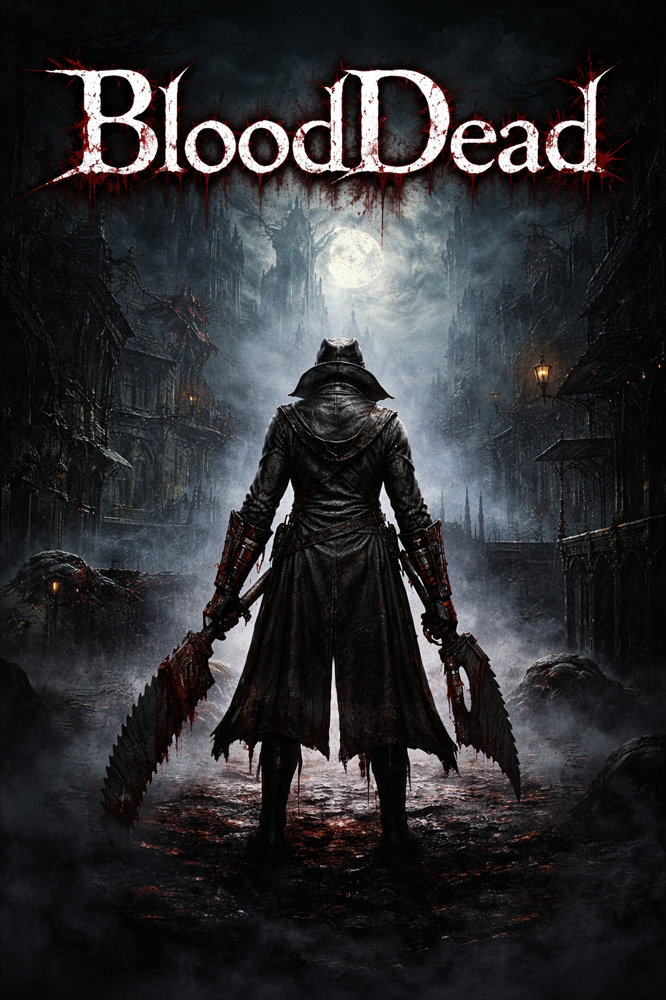
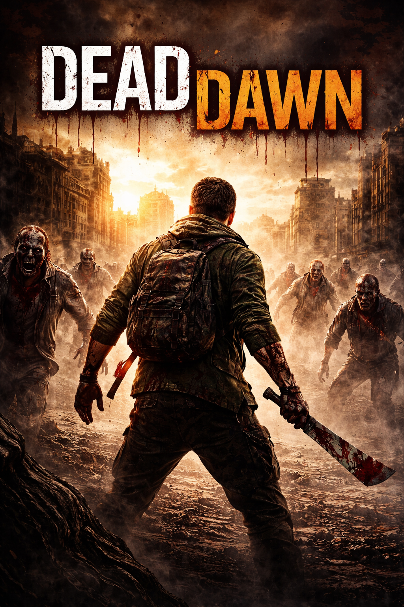
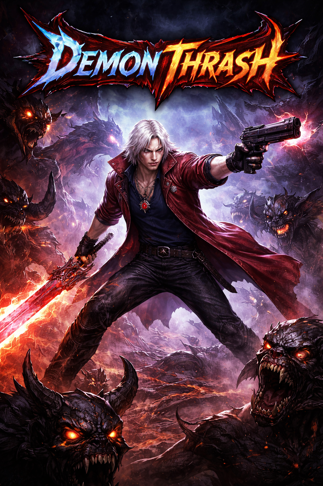
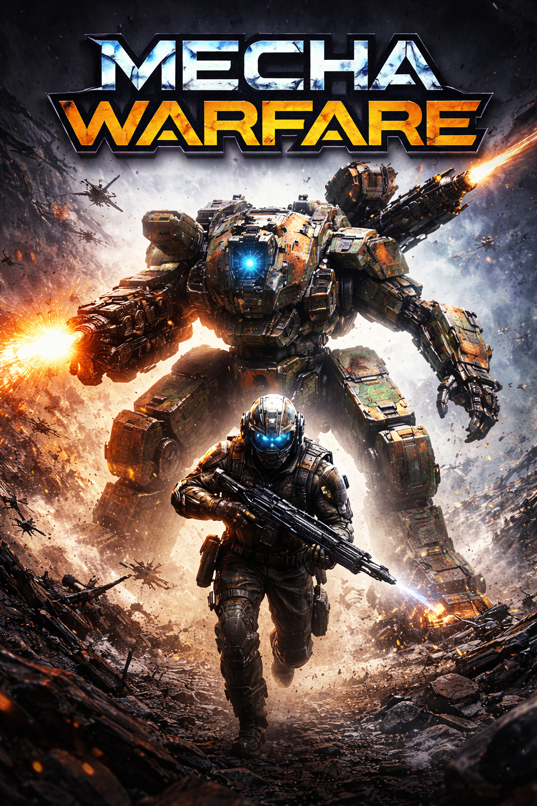

(1).png)

Sobre Nós
A Blaidd é uma desenvolvedora de jogos dedicada a criar experiências únicas, acessíveis e marcantes para jogadores de todos os estilos. Nosso propósito vai além de apenas desenvolver jogos — buscamos entregar imersão, qualidade e inovação em cada projeto.
Valorizamos a acessibilidade, garantindo que mais pessoas possam aproveitar nossos jogos sem barreiras, e investimos em design criativo e mecânicas envolventes que tornam cada experiência memorável. Nossa equipe trabalha com foco em tecnologia atual, sempre explorando novas ideias e tendências do mercado.
Na Blaidd, acreditamos que jogos são mais do que entretenimento — são formas de conexão. Por isso, colocamos a comunidade em primeiro lugar, ouvindo feedbacks e evoluindo constantemente para entregar o melhor aos jogadores.
Nosso Estabelecimento
Veja abaixo onde nos encontrar!
Nossos Jogos




Conheça Um Pouco
Em uma cidade consumida pela escuridão e pela loucura, BloodDead coloca você na pele de um caçador marcado por um destino cruel. À medida que a noite avança, criaturas grotescas emergem das sombras, transformando as ruas em um verdadeiro pesadelo vivo.
Com um combate intenso e estratégico, o jogo recompensa agressividade e precisão, exigindo que o jogador domine armas brutais e habilidades únicas para sobreviver. Cada inimigo é uma ameaça real, e cada decisão pode significar a vida ou a morte.
Explore um mundo sombrio repleto de segredos, descubra a verdade por trás da praga que assola a cidade e enfrente horrores indescritíveis que desafiam a sanidade humana.
BloodDead é uma experiência imersiva que combina ação visceral, atmosfera gótica e uma narrativa envolvente — feita para aqueles que não têm medo de encarar a escuridão.
Em um mundo devastado por uma infecção sem controle, DeadDawn coloca você no centro de uma cidade à beira do colapso, onde cada rua é uma ameaça e cada som pode atrair a morte. Com o cair do sol, o perigo se intensifica — e sobreviver se torna ainda mais desafiador.
Misturando combate brutal com mobilidade dinâmica, o jogo incentiva o jogador a explorar o ambiente, usar a verticalidade ao seu favor e improvisar armas para enfrentar hordas de infectados. A gestão de recursos e o tempo são essenciais para continuar vivo em meio ao caos.
Durante o dia, procure suprimentos, ajude sobreviventes e fortaleça sua base. À noite, enfrente criaturas mais rápidas, agressivas e mortais, em uma experiência que testa seus limites a cada segundo.
DeadDawn entrega uma jornada intensa com ação frenética, sobrevivência estratégica e um mundo aberto imersivo — onde fugir, lutar ou escalar pode ser a diferença entre ver o próximo amanhecer… ou não.
Em um mundo dominado por forças demoníacas, Demon Thrash coloca você na pele de um caçador implacável que desafia o inferno com estilo e poder. Entre batalhas intensas e inimigos colossais, apenas os mais habilidosos conseguem sobreviver ao caos.
Com um sistema de combate rápido e fluido, o jogo recompensa combos criativos, reflexos apurados e domínio total do arsenal. Alterne entre armas devastadoras e habilidades sobrenaturais para criar sequências de ataque impressionantes e eliminar hordas de demônios.
Explore cenários infernais repletos de desafios, enfrente chefes épicos e descubra segredos que revelam o verdadeiro conflito entre humanos e criaturas das trevas.
Demon Thrash entrega uma experiência eletrizante com combate estiloso, ação acelerada e uma estética marcante — onde destruir inimigos com estilo é tão importante quanto sobreviver.
Em um futuro marcado por guerras tecnológicas, Mecha Warfare coloca você no campo de batalha ao lado de máquinas gigantes de combate. Como um piloto de elite, sua missão é enfrentar ameaças massivas e dominar conflitos em escala épica.
Alterne entre combate em solo e controle de mechas altamente armados, combinando estratégia e ação em tempo real. Cada decisão em batalha impacta diretamente sua sobrevivência, exigindo precisão, posicionamento e uso inteligente de recursos.
Enfrente exércitos inimigos, participe de confrontos intensos e desenvolva sua conexão com sua máquina para desbloquear todo o seu potencial destrutivo.
Mecha Warfare oferece uma experiência poderosa com batalhas grandiosas, combate tático e uma forte ligação entre piloto e máquina — onde cada missão é uma guerra por sobrevivência.